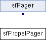

Documentation des constructeurs et destructeur
| __construct |
( |
$ |
class, |
|
|
$ |
maxPerPage = 10 | |
|
) |
| | |
Constructor.
- Voir également:
- sfPager
Réimplémentée à partir de sfPager.
Documentation des fonctions membres
Returns the name of the current model class' peer class.
- Renvoie:
- string
Returns the peer count method name.
- Renvoie:
- string
Returns the peer method name.
- Renvoie:
- string
| retrieveObject |
( |
$ |
offset |
) |
[protected] |
| setCriteria |
( |
$ |
criteria |
) |
|
Sets the Criteria for the current pager.
- Paramètres:
-
| setPeerCountMethod |
( |
$ |
peer_count_method_name |
) |
|
Sets the peer count method name.
- Paramètres:
-
| string | $peer_count_method_name |
| setPeerMethod |
( |
$ |
peer_method_name |
) |
|
Sets the peer method name.
- Paramètres:
-
| string | $method A method on the current peer class |
La documentation de cette classe a été générée à partir du fichier suivant :
- /var/www/els/lib/vendor/symfony/lib/plugins/sfPropelPlugin/lib/addon/sfPropelPager.class.php
 1.7.1
1.7.1